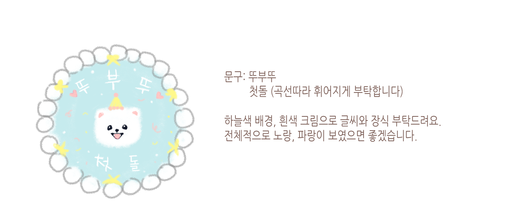

Ahead of Tsubu's first birthday, our family wanted to give him special memories. We decided to make a birthday cake that even dogs can eat!

I looked for a custom-made store, made a design of a cake, and requested it to be made.
The cake was successful, and Tsubu smiled happily at the sweet taste he had never tasted before. A cake was a large amount for a young puppy to eat, so it was divided into the freezer and could be eaten for a very long time.
Our family tried to leave many good memories in Ddubu's short life. So we planned several trips just for him.
We got a pension in the forest, walked in the dewy forest, and tasted salty water in the sea breeze. And I went on an island trip by boat and showed and experienced many things to Ddubu. It may have actually given him a feeling of happiness, but his face in our eyes looked happy.